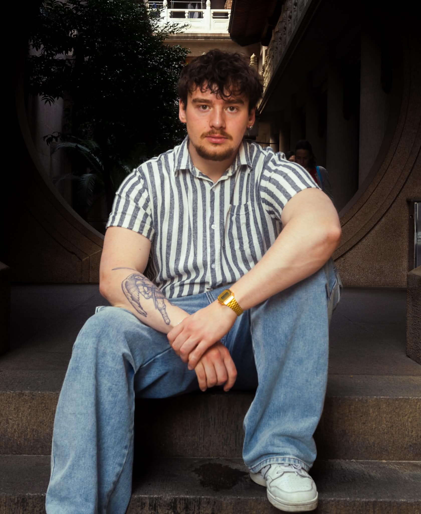

IS-302 Praksisprosjekt — Høst 2026
IT & IT og informasjonsstudent ved Universitetet i Agder, på utkikk etter en meningsfull praksisplass hvor jeg kan bidra og bygge min karriere med et team.
01 — Om meg
Jeg er i mitt andre år av IT og informasjonssystemer ved UiA. Jeg bygger ting, løser problemer og lærer best gjennom praksis. Full-stack webutvikling, databasedesign, hardware og systemadministrasjon — jeg trives når jeg får tatt tak i konkrete utfordringer.
Jeg har bygget mitt eget homelab med DDNS, VPN og Pi-hole, og jobber regelmessig med virtuelle maskiner. Det gjør meg komfortabel med infrastruktur og systemkonfigurering. Jeg søker en praksisplass hvor jeg kan bidra reelt samtidig som jeg lærer hvordan organisasjoner jobber med IT.
Når jeg ikke koder eller labber, trener jeg, hører på musikk eller ser film. Nylig tilbake fra utvekslingssemester i New Zealand.
02 — Presentasjonsvideo
VIDEO KOMMER
Replace this block with a YouTube embed or <video> tag
03 — Hva jeg kan tilby
Full-stack med C#, .NET, MariaDB. Docker, REST API-er. Bygger systemer fra bunnen av.
Praktisk erfaring med virtuelle maskiner, DDNS, VPN, Pi-hole. Hardware, RAID, Linux og nettverksadministrasjon.
Kravinnsamling, systemdesign, dokumentasjon. Figma for UI-prototyping og wireframing.
Git-arbeidsflyter, kodegjennomgang, prosjektplanlegging. Direkte og tydelig kommunikator.
04 — Kontakt
Interesert i å ha meg som praksisstudent? Gjerne ta kontakt gjennom noen av kanalene nedenfor.
IS-302 Praksisprosjekt — Høst 2026
2. års IT-student ved Universitetet i Agder, søker meningsfull praksisplass for å lære og vokse faglig.
01 — Om

Jeg går 2. året på IT-studiet ved UiA og har utvekslet i Seoul under vårsemesteret. Jeg ser frem til å anvende kunnskapen min i praksis. Jeg søker en meningsfull praksisplass hvor jeg kan lære, utvikle meg og bidra til noe verdifullt.
Jeg har solide problemløsningsferdigheter og en bred interesse for IT. Erfaring fra kundeservice har gitt meg god forståelse for kommunikasjon, samarbeid og viktigheten av å levere gode resultater. Jeg er allsidig og liker å utfordre meg selv både faglig og personlig.
Når jeg ikke studerer eller jobber i Mandal Fengsel pleier jeg å trene, og reise når muligheten byr seg. Jeg ønsker en praksisplass hvor jeg kan gjøre en forskjell samtidig som jeg utvikler meg videre både faglig og personlig.
02 — Presentasjonsvideo
VIDEO KOMMER
Erstatt denne blokken med en YouTube-embed eller et <video>-element
03 — Hva jeg kan tilby
Strukturert tilnærming til utfordringer og problemer. Jeg analyserer situasjoner kritisk og finner effektive løsninger.
Sterk forståelse av IT-systemer og teknologi. Fullstack utvikling, UX design, samarbeid i teams, Qgis, C#, Docker / MariaDB.
Erfaring med å håndtere kunder med profesjonalitet og empati. Jeg lytter aktivt og løser problemer.
Motivert og engasjert til å ta på meg nye oppgaver. Jeg bidrar aktivt og bringer positiv energi til teamet.
04 — Kontakt
Interesert i å ha meg som praksisstudent? Gjerne ta kontakt kontakt nedenfor.
IS-302 Praksisprosjekt — Høst 2026
IT-student på UIA som søkerpraksisplass med faglig utvikling.
01 — Om
[ BILDE ]
Replace src with your image
Jeg studerer IT og informasjonsystemer på UiA og ønsker å lære mer om hvordan det vil være å jobbe med prosjekter i arbeidslivet. Jeg begynner etter sommeren på tredje året på UIA.
Jeg er nysgjerrig, lærevillig og liker å samarbeide med andre. Jeg er veldig glad i å prøve å løse ulike IT-oppgaver. Målet mitt er å finne en praksisplass hvor jeg kanskaffe god erfaring til senere. Jeg håper at kunnskapen jeg har opparbeidet meg kan bidra til å skape noe jeg virkelig kan være stolt av.
Utenom studiene er jeg interessert i gaming, trening og fotball. Når jeg ikke er i Kristiansand og har fri fra studiene, jobber jeg i en barnehage som ligger i Stathelle. Jeg prøver alltid å gjøre jobben grundig.
02 — Presentation Video
VIDEO KOMMER
Replace this block with a YouTube embed or <video> tag
03 — Hva jeg kan tilby
Grunnleggende erfaring med web, programmering og databaser. Har erfaring med Python, html, PostgreSQL, CSS og C#.
Jeg liker utfordringer og løse problemer. Det å løse og fikse problemer gir meg mye motivasjon
Jobber godt i team og kommuniserer klart. Anser meg selv som sosialt flink og er en sosial type
Jeg ser etter praksis hvor jeg kan bidra og utvikle meg raskt. Er engasjer og motivert til å ta ansvar for mulige oppgaver.
04 — Kontakt
Ønsker du å vite mer om min del på nettsiden eller min bakgrunn? Send en melding via e-post eller LinkedIn.
IS-302 Praksisprosjekt — Høst 2026
IT og informasjonsstudent ved Universitetet i Agder, Ser etter praksisplass hvor jeg kan bidra med gode løsninger i tillegg til å utvikle mine ferdigheter.
01 — Om
[ BILDE ]
Kommer snart
Jeg er for tiden i mitt andre år av studiene i IT og informasjonssystemer ved UiA. For øyeblikket er jeg på utveksling i New Zealand, noe som har gitt meg verdifull erfaring både faglig og personlig.
Jeg liker best å jobbe praktisk — å løse konkrete problemer fremfor å bli værende i teorien. Jeg har erfaring med C# og jobber gjerne med utvikling, systemer og infrastruktur.
Utenom studiene er jeg glad i trening, fotball og sosiale aktiviteter. Jeg trives godt i team og setter pris på et godt arbeidsmiljø.
02 — Presentasjonsvideo
VIDEO KOMMER
Erstatt denne blokken med en YouTube-embed eller et <video>-element
03 — Hva jeg kan tilby
Erfaring med C# og .NET, samt webutvikling med HTML. Liker å bygge systemer fra bunnen av og finne gode løsninger på praktiske problemer.
Erfaring med Docker og MariaDB, samt nettverksadministrasjon.
Jeg foretrekker å jobbe praktisk og løse konkrete utfordringer. Jeg er strukturert, løsningsorientert og liker å ta tak i problemer direkte.
Trives godt i team og er vant til å jobbe med Git-arbeidsflyter. Sosial og sammarbeidsvillig
04 — Kontakt
Interessert i å ha meg som praksisstudent? Send meg en melding på e-post så hører du fra meg.